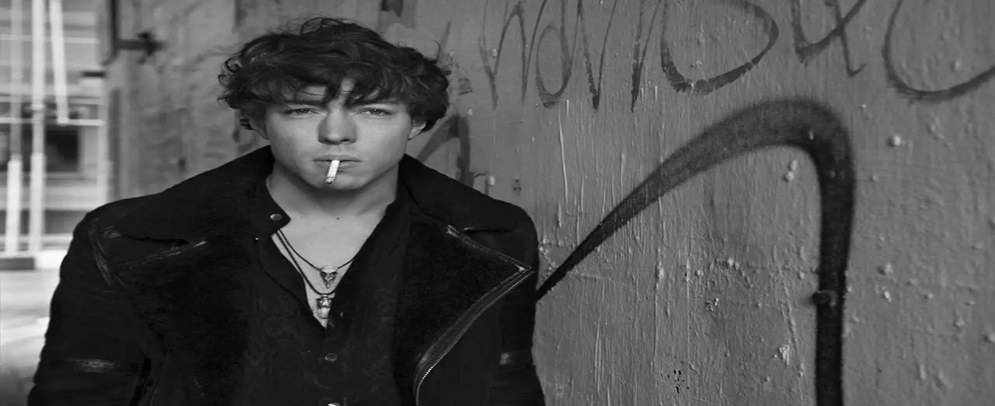
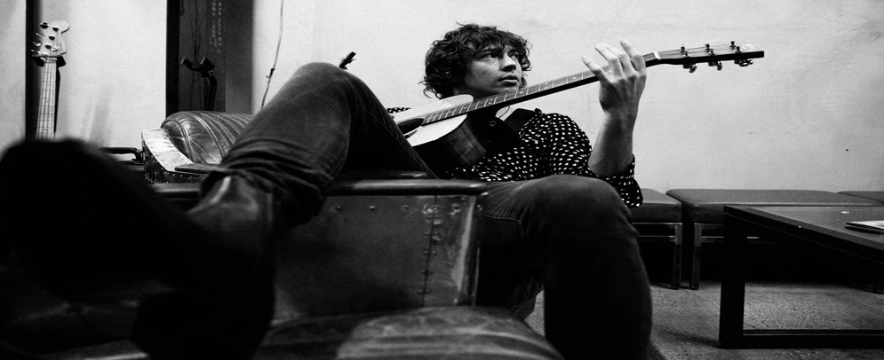
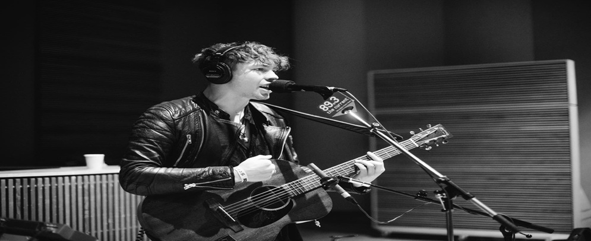
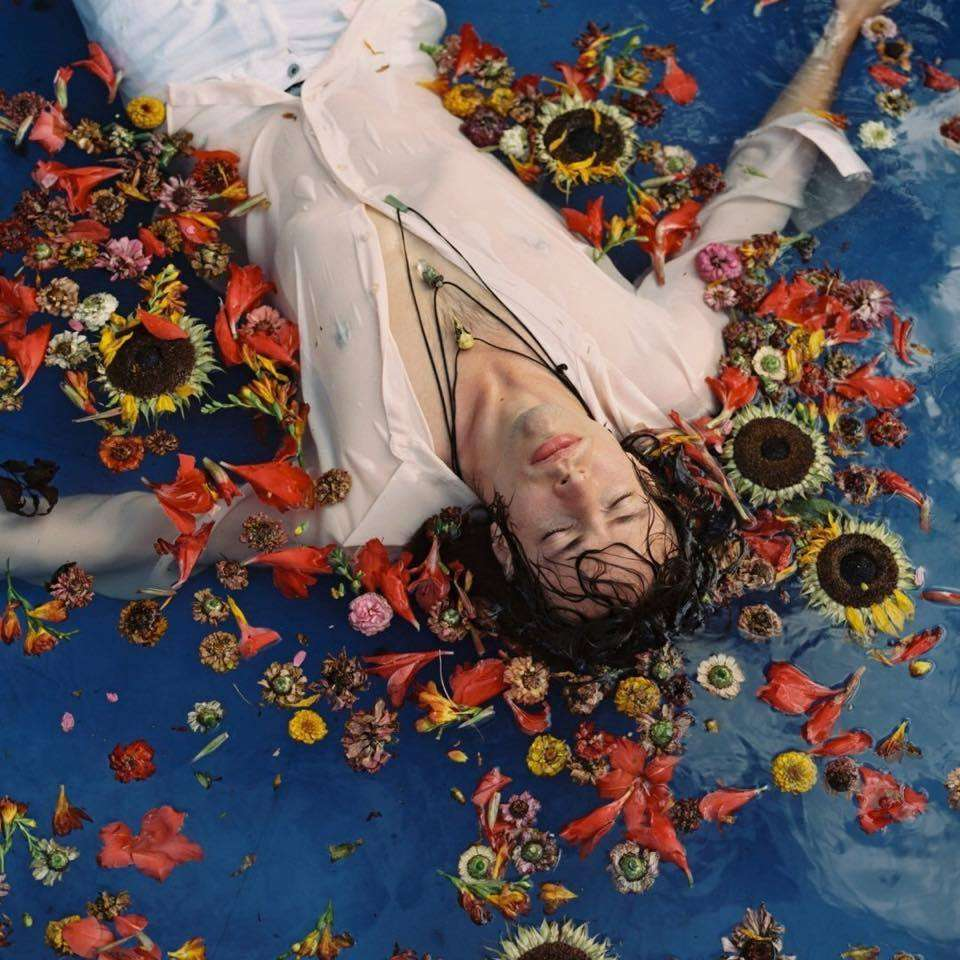
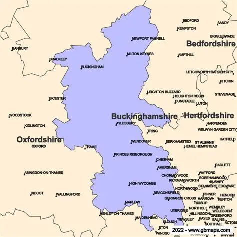
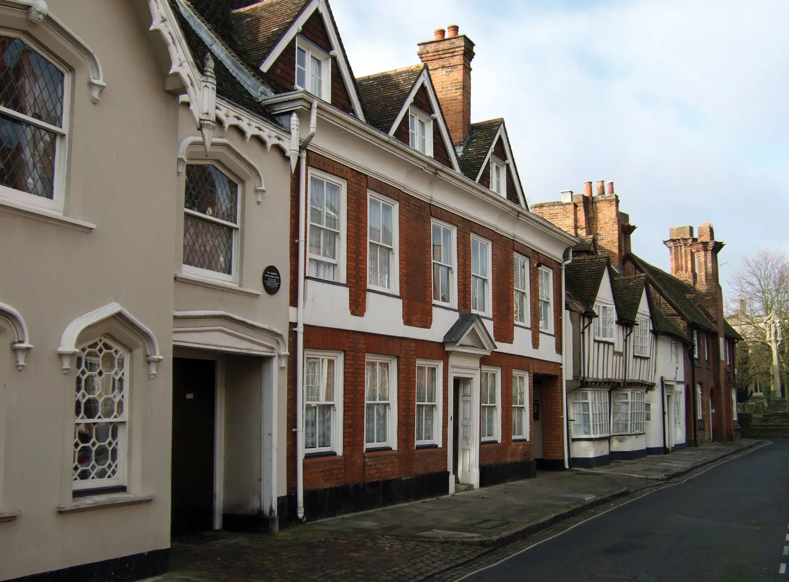

Nombre real:Barnaby George Courtney
Fecha de nacimiento: 17 de noviembre de 1990
Lugar: Aylesbury, Buckinghamshire, Inglaterra
Altura: 1.80 m
Géneros musicales:Rock alternativo, indie rock, folk pop


Origenes
Barns Courtney vivió en Inglaterra hasta los 4 años, cuando su familia se mudó a Seattle, Washington. A los 15, regresó al Reino Unido. Antes de alcanzar el éxito, pasó por momentos difíciles: trabajó en PC World, durmió en sofás de amigos y en el auto de su novia. Formó parte de bandas como SleeperCell y Dive Bella Dive, esta última firmó con Island Records y tocó en el Download Festival en 2012
Carrera musical
Su salto como solista llegó en 2015 con el tema “Glitter & Gold”,
que se volvió viral en Spotify y lo llevó a presentarse en el Radio 1's Big Weekend. También
fue usado en el tráiler de The Founder (con Michael Keaton)
Ese mismo año lanzó “Fire”, que apareció en la película Burnt y fue parte del anuncio de Top Gear.
Ambas canciones acumulan decenas de millones de reproducciones en Spotify